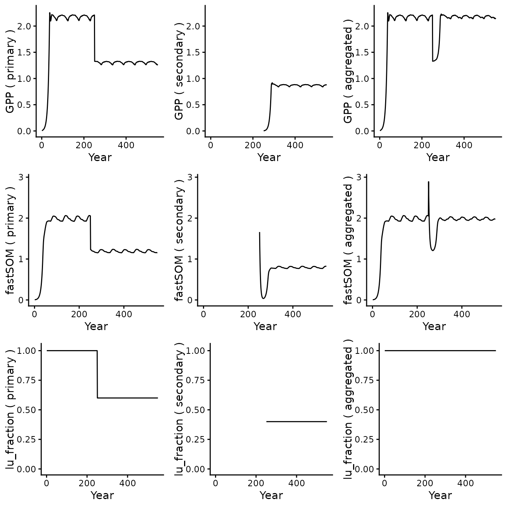
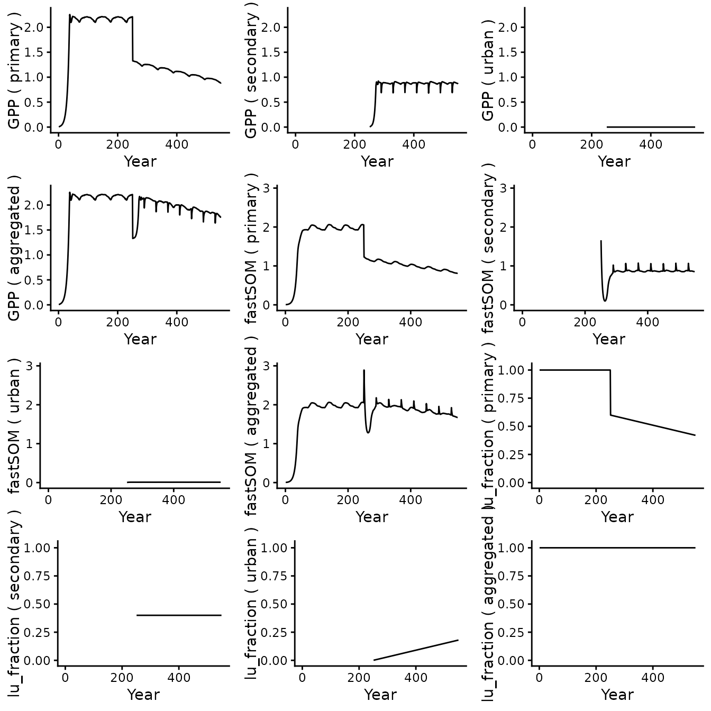

Overview
BiomeE is a dynamic vegetation demography simulation engine capable
of predicting the evolution of a vegetation tile characterized
by static parameters (species, soil parameters, initial vegetation, etc)
when subject to environmental forcing. To learn more, please refer to
vignette("BiomeE usage"). Starting from v5.1, BiomeE is
capable of simulating land use and land-use change (LULUC) by evolving
multiple vegetation tiles, each with different vegetation types and/or
different land-use practices. This section presents an overview of the
concepts and methods.
Fractional tiles
Conceptually, BiomeE simulates a grid cell of area 1 (arbitrary unit)
divided in several land units (LU). The fraction of
the cell occupied by each LU varies with time driven by land-use
change (LUC) forcing. Each LU is implemented as a vegetation tile
associated with the scalar fraction (indicating the
fraction occupied by the LU).
LU transitions
A square transition matrix encodes the exogenous yearly land-use change: is the fraction of LU transitioning to LU on January 1st (start of the year). Such a LUC transition is modelled as a clear-cut of the fraction in LU and transfer of the corresponding area to LU , along with the soil organic pools, water, and belowground biomass converted to litter. The aboveground biomass is sent to 3 product pools with e-folding times of 0, 2 and 20 years respectively.
Each transition found in the matrix is evaluated in turn, and the transfer of matter to each destination LU is accounted throughout the update process, to ultimately be added to the appropriate LUs. This gross transition heuristic provides better accuracy compared to a strategy where net transitions are considered (thereby transitions from to and from cancels each others out).
Clear-cut and wood harvest
The diagonal of the transition matrix contains self transitions , where a fraction of LU is clear-cut, but without any transfer of area, water or soil organic matter. The aboveground biomass is exported to the product pools, while the belowground biomass is converted to litter and remains in place. In effect, this models the forestry practice of clear-cutting.
Note: crop harvest uses a different mechanism (direct litter oxidation). Self-transitions should therefore be used for wood harvest exclusively.
Other land management practices
LUs can furthermore be tailored to model broad categories of land management:
- which species grow in the LU (or none in the case of an urban area),
- fixed addition of nitrogen (N fertilization)
- extra soil turnover rate (ex: tillage)
- direct oxidation of litter (crop and grass harvest)
Getting started
This section demonstrates how to simulate LULUC with BiomeE.
Setup
The package contains an example of driver from the Swiss CH-LAE fluxnet site, using environmental data for the year 2009, where 40% of an initial primary forest is clear-cut and convert to a secondary (yet unmanaged) forest.
The default setting is to simulate 1 year of transient data after 250 years of spin-up. Let us increase the transient period to 300 years:
df_drivers <- biomee_p_model_luluc_drivers
df_drivers$params_siml[[1]]$nyeartrend <- 300Let us have a glance at the LU settings:
df_drivers$init_lu[[1]]
#> # A tibble: 2 × 2
#> name fraction
#> <chr> <dbl>
#> 1 primary 1
#> 2 secondary 0There are two LU defined:
-
primary: with an initial fraction of 1 -
secondary: with an initial fraction of 0
The spin-up will use these initial fractions without applying any land-use change. Note that the names of the LUs are arbitrary: BiomeE do not infer anything from these names.
Let us now turn our attention to the transition matrix:
df_drivers$luc_forcing[[1]]
#> , , 1
#>
#> [,1] [,2]
#> [1,] 0 0.4
#> [2,] 0 0.0It is a 3-dimensional matrix. The first two dimensions represent a square matrix of size 2x2 (we have defined 2 LUs), and the third dimension represents the years, starting from the first transient year. In this case we have only one year, meaning that there is only one LU change at the beginning of year 1, then the simulation proceeds without further LU change for the remaining of the simulation.
Simulation
Let us run the simulation:
out_sim_1 <- runread_biomee_f(df_drivers)Next, we define some convenience functions for displaying plots:
library(gridExtra)
#>
#> Attaching package: 'gridExtra'
#> The following object is masked from 'package:dplyr':
#>
#> combine
library(purrr)
plot1 <- function(lu_name, variable, out, y_limit=NA, yr_start=1, yr_label_offset=0) {
tile <- out[[lu_name]][[1]]
if(lu_name != 'aggregated'){
tile <- tile$output_annual_tile
} else {
tile <- tile$output_annual_cell
}
if (variable != 'lu_fraction') {
res <- tile %>%
ggplot() +
geom_line(aes(x = year + yr_label_offset,
y = get(variable) * lu_fraction)) +
coord_cartesian(xlim = c(yr_start, NA),
ylim = c(0, y_limit)) +
theme_classic() +
labs(x = "Year", y = paste(variable, "(", lu_name, ")"))
} else {
stopifnot(variable == 'lu_fraction')
res <- tile %>%
ggplot() +
geom_line(aes(x = year + yr_label_offset,
y = get(variable))) +
coord_cartesian(xlim = c(yr_start, NA),
ylim = c(0, y_limit)) +
theme_classic() +
labs(x = "Year", y = paste(variable, "(", lu_name, ")"))
}
return(res)
}
plot_variable <- function(variable, out, yr_start=1, yr_label_offset=0) {
agg <- out[['aggregated']][[1]]$output_annual_cell
y_limit <- max(agg[variable] * agg$lu_fraction) * 1.01
# We remove sitename and aggregated
tile_names <- names(out)[3:length(names(out))]
names <- c(tile_names, 'aggregated')
names |> lmap(\(x) plot1(x, variable, out, y_limit, yr_start, yr_label_offset))
}
plot_variables <- function(variables, out, yr_start=1, yr_label_offset=0) {
plots <- variables |> lmap(\(x) plot_variable(x, out, yr_start, yr_label_offset))
grid.arrange(grobs=plots, nrow = length(variables))
}We finally plot, for each LU and the aggregated tile, GPP, the litter
carbon (fastSOM), and the LU fraction:
plot_variables(c('GPP', 'fastSOM', 'lu_fraction'), out_sim_1)
Looking at GPP (first row), the primary forest (left column) spins-up to steady state until year 250 which marks the start of the transient period. A sharp drop corresponds to the loss of 40% of the area (see third row). The pattern corresponding to the steady-state continues but scaled down. We observe a similar behavior for the litter (second row).
The secondary forest (second column) has no data until year 250 as the initial fraction was 0. GPP increases until reaching steady-state as expected. Since the same species is used in both LU, the GPP stabilizes at the same level (proportionally to the LU fraction). The litter follows a different pattern: at year 250, it inherits a lot of biomass from the primary forest. The amount of litter drops sharply due to natural processes and not replenishment because of the low initial productivity of the LU. As productivity increases (see GPP), the amount of litter finally increases again and stabilizes at a level proportional to its fraction.
The third column displays the aggregated tile, summing each LU relative to its fraction. GPP shows a sharp drop then recovery. Litter shows a sharp increase (due to below ground biomass being converted to litter) followed by a drop (mineralization) then recovery. Finally, as expected, the fraction of the aggregated tile remains constant throughout the simulation.
To conclude this demonstration, let us plot the product pools:
p1 <- out_sim_1$aggregated[[1]]$output_annual_cell %>%
ggplot() +
geom_line(aes(x = year, y = prod_pool_1_C)) +
theme_classic() +
labs(x = "Year", y = paste("Prod. pools C (2 years)"))
p2 <- out_sim_1$aggregated[[1]]$output_annual_cell %>%
ggplot() +
geom_line(aes(x = year, y = prod_pool_2_C)) +
theme_classic() +
labs(x = "Year", y = paste("Prod. pools C (20 years)"))
grid.arrange(p1, p2, nrow = 1)
As expected, the product pools get filled with the wood harvest and decay with their respective e-folding times.
Wood harvest and urbanism
We will now implement a more complex scenario. In addition to the one time transition from a primary to a secondary forest:
- each year, one thousands of the primary forest is converted to urban area,
- every 40 years, one quarter of the secondary forest is clear-cut (wood harvest), but the area remains in the same tile.
Furthermore, the species planted in the secondary forest are different than that occurring naturally in the primary forest.
Let us configure these requirements:
df_drivers <- biomee_p_model_luluc_drivers
# We extend the transient period to 300 years
n_trans <- 300
df_drivers$params_siml[[1]]$nyeartrend <- n_trans
lu_defs <- tibble(
name = c('primary', 'secondary', 'urban'),
fraction = c(1.0, 0.0, 0.0),
# We defined which LU can accept vegetation cohorts
# Technically, this was not necessary since no 'lu_index' (see below) points to the third LU
# (but it is a good idea to enforce this anyways)
vegetated = c(TRUE, TRUE, FALSE)
# Equivalently, presets could have been used instead:
#preset = c('unmanaged', 'unmanaged', 'urban')
)
n_lu <- length(lu_defs$name)
# Initial transition
# 3 LUs, so each year land-use change is represented by 3x3 transitions.
# The first 3 numbers are the transitions from each LU to the first LU,
# the following three numbers are the transitions from each LU to the second LU, and so on.
initial_transition <- c(0, 0, 0, 0.4, 0, 0, 0, 0, 0)
# Harvest pattern: clear-cut secondary forest every 40 years by an area
# corresponding to 10% of the tile (0.1). That corresponds to a fourth of the area
# of secondary forest (0.4/4 = 0.1).
# Clear-cuts are represented by self-transitions of LU 2, of area 0.1.
harvest_pattern <- c(
rep(rep(0, 9), 39), # null pattern
c(0, 0, 0, 0, 0.1, 0, 0, 0, 0)
)
# We repeat the harvest pattern enough times
harvest_transitions <- rep(harvest_pattern, 10)
# We define a transition from primary to urban repeated every year
urban_transition <- rep(c(0, 0, 0, 0, 0, 0, 0.0006, 0, 0), n_trans)
# We add all the transition matrix
transitions_matrix <- build_luc_matrix(list(initial_transition, harvest_transitions, urban_transition), n_lu, n_trans)
# We set the LU definitions and transition forcing in the driver:
df_drivers$init_lu[[1]] <- lu_defs
df_drivers$luc_forcing[[1]] <- transitions_matrix
# Finally, we configure two cohorts with two different species (see 'init_cohort_species'): one for tile 1 and one for tile 2 (see 'lu_index').
# LU 3 is an urban tile: it does not accept any cohort.
df_drivers$init_cohort[[1]] <- tibble(
init_cohort_species = c(2, 3), # species
init_cohort_nindivs = rep(0.05, 2), # initial individual density, individual/m2 ! 1 indiv/m2 = 10.000 indiv/ha
init_cohort_bl = rep(0.0, 2), # initial biomass of leaves, kg C/individual
init_cohort_br = rep(0.0, 2), # initial biomass of fine roots, kg C/individual
init_cohort_bsw = rep(0.05, 2), # initial biomass of sapwood, kg C/individual
init_cohort_bHW = rep(0.0, 2), # initial biomass of heartwood, kg C/tree
init_cohort_seedC = rep(0.0, 2), # initial biomass of seeds, kg C/individual
init_cohort_nsc = rep(0.05, 2), # initial non-structural biomass
lu_index = c(1, 2) # index land use (LU) containing this cohort. 0 (default) means any vegetated tile will contain a copy.
)We can now run the simulation and display some of the outputs:
out_sim_2 <- runread_biomee_f(df_drivers)
plot_variables(c('GPP', 'fastSOM', 'lu_fraction'), out_sim_2)
As expected GPP is null for the urban tile (no vegetation). Note that the litter for this tile is not zero, but too small to be seen at this scale.
As before, we can also look at the product pools:
p1 <- out_sim_2$aggregated[[1]]$output_annual_cell %>%
ggplot() +
geom_line(aes(x = year, y = prod_pool_1_C)) +
theme_classic() +
labs(x = "Year", y = paste("Prod. pools C (2 years)"))
p2 <- out_sim_2$aggregated[[1]]$output_annual_cell %>%
ggplot() +
geom_line(aes(x = year, y = prod_pool_2_C)) +
theme_classic() +
labs(x = "Year", y = paste("Prod. pools C (20 years)"))
grid.arrange(p1, p2, nrow = 1)Crop rotation and land management
We now model crop rotation and management practices. A primary forest is initially clear-cut to cultivate crop. Then every two years one third of the land is left unmanaged (fallow.)
Let us configure these requirements:
df_drivers <- biomee_p_model_luluc_drivers
# We extend the transient period to 300 years
n_trans <- 300
df_drivers$params_siml[[1]]$nyeartrend <- n_trans
lu_defs <- tibble(
name = c('primary', 'crop', 'fallow'),
fraction = c(1.0, 0.0, 0.0),
# Here we use presets to easily configure some parameters for the cropland
# ('extra_N_input', 'extra_turnover_rate', 'oxidized_litter_fraction')
# preset 'unmanaged' sets all these parameters to 0
preset = c('unmanaged', 'cropland', 'unmanaged')
)
n_lu <- length(lu_defs$name)
# Initial transition
# 3 LUs, so each year land-use change is represented by 3x3 transitions.
# The first 3 numbers are the transitions from each LU to the first LU,
# the following three numbers are the transitions from each LU to the second LU, and so on.
initial_transition <- c(0, 0, 0, 0.66, 0, 0, 0.34, 0, 0)
# Fallow pattern:
fallow_pattern <- c(
c(0, 0, 0, 0, 0, 0.33, 0, 0.33, 0),
rep(0, 9) # null pattern
)
# We repeat the harvest pattern enough times
fallow_transitions <- rep(harvest_pattern, 150)
# We add all the transition matrix
transitions_matrix <- build_luc_matrix(list(initial_transition, fallow_transitions), n_lu, n_trans)
# We set the LU definitions and transition forcing in the driver:
df_drivers$init_lu[[1]] <- lu_defs
df_drivers$luc_forcing[[1]] <- transitions_matrix
# We configure three cohorts
df_drivers$init_cohort[[1]] <- tibble(
init_cohort_species = c(2, 1, 2), # species
init_cohort_nindivs = rep(0.05, 3), # initial individual density, individual/m2 ! 1 indiv/m2 = 10.000 indiv/ha
init_cohort_bl = rep(0.0, 3), # initial biomass of leaves, kg C/individual
init_cohort_br = rep(0.0, 3), # initial biomass of fine roots, kg C/individual
init_cohort_bsw = rep(0.05, 3), # initial biomass of sapwood, kg C/individual
init_cohort_bHW = rep(0.0, 3), # initial biomass of heartwood, kg C/tree
init_cohort_seedC = rep(0.0, 3), # initial biomass of seeds, kg C/individual
init_cohort_nsc = rep(0.05, 3), # initial non-structural biomass
lu_index = c(1, 2, 3) # index land use (LU) containing this cohort. 0 (default) means any vegetated tile will contain a copy.
)We can now run the simulation as before.
Notes:
- Crop harvesting is already included in land management (via
oxidized_litter_fraction), so it does not require self-transitions as for wood harvesting. - This example uses a dummy C4 grass setup (species 1) and should not
be expected to yield meaningful results. For accurate simulations,
please provide values in
params_speciesfor the crop you which to simulate.
LUH2 integration
BiomeE integrates seamlessly with LUH2 v2 data (https://luh.umd.edu/data.shtml). To preprocess the LUH2
data for use with BiomeE we can use the separate package
luhrsofun that is available at (https://github.com/geco-bern/luhrsofun).
The function luhrsofun::parse_luh2() can be used to
parse LUH2 manually and set the necessary data in the driver object
before running BiomeE. This workflow is illustrated in the vignettes of
the luhrsofun package.